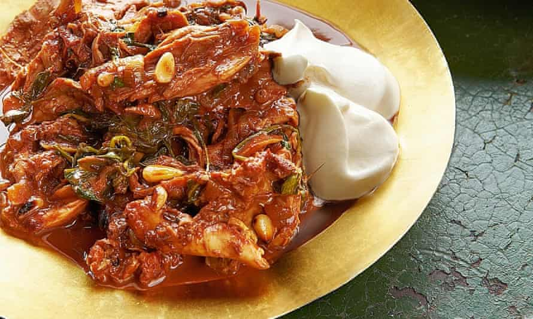

Chilli chicken with cinnamon and spinach

The combination of cinnamon, chillies and chocolate give this sauce a rather Mexican, mole-like air; the pink peppercorns, on the other hand, are untypical. Either way, this is a rich dish that’s great for an Easter weekend feast. I like it with mashed potatoes.
Season the chicken legs with three-quarters of a teaspoon of salt and a good grind of pepper. On a high flame, heat the sunflower oil in a large saute pan for which you have a lid. Add half the chicken and sear for six to seven minutes, turning once halfway through, until deep golden-brown on both sides. Remove from the pan and set aside while you repeat with the remaining chicken.
Add the onions and garlic to the empty pan, and cook on a medium-high heat for 12-15 minutes, stirring often, until the onions are soft, dark and caramelised. Add the tomato wedges, cinnamon, peppercorns, dried chillies and a quarter-teaspoon of salt, cook for four to five minutes, stirring from time to time, then pour the brandy over everything. Cook for two minutes, then return the chicken to the pan with the wine, stock and 300ml water, turn down the heat to low, cover and simmer for an hour.
Lift out the chicken pieces, turn up the heat and leave the sauce to bubble away for 20-25 minutes, until thick and reduced to a quarter of its original volume (ie, you should have about 500ml left in the pan at the end). Remove and discard the cinnamon and chillies, stir in the chocolate and spinach, and cook for two minutes, stirring. Remove from the heat and set aside.
Once the chicken is cool enough to handle, pick all the meat off the bones in 5cm pieces (like so many cooking jobs, your hands are by far the best tool for doing this). Gently stir the meat and pine nuts into the sauce, and serve at once with a generous spoonful of soured cream on each portion.